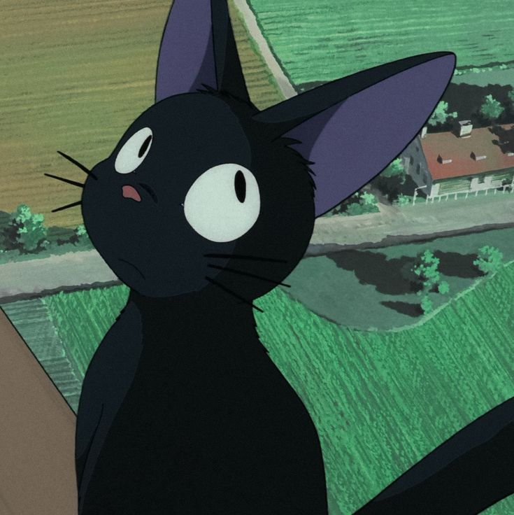

Hope is the thing with feathers That perches in the soul, And sings the tune without the words, And never stops at all, And sweetest in the gale is heard; And sore must be the storm That could abash the little bird That kept so many warm. I've heard it in the chillest land, And on the strangest sea; Yet, never, in extremity, It asked a crumb of me. - emily dickinson
Two roads diverged in a yellow wood, And sorry I could not travel both And be one traveler, long I stood And looked down one as far as I could To where it bent in the undergrowth; Then took the other, as just as fair, And having perhaps the better claim, Because it was grassy and wanted wear; Though as for that the passing there Had worn them really about the same, And both that morning equally lay In leaves no step had trodden black. Oh, I kept the first for another day! Yet knowing how way leads on to way, I doubted if I should ever come back. I shall be telling this with a sigh Somewhere ages and ages hence: Two roads diverged in a wood, and I— I took the one less traveled by, And that has made all the difference. -robert frost
